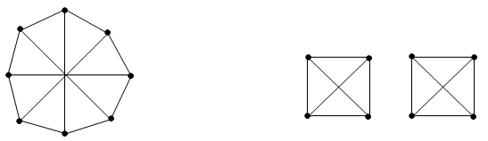

Is it true that two graphs are isomorphic if:
a) they have 10 vertices, the degree of each of which is equal to 9?
b) they have 8 vertices, the degree of each of which is equal to 3?
c) are they connected, without cycles and contain 6 edges?
a) In such a graph, each vertex is connected to all of the others.
b) See the counterexample:

c) See the counterexample:
a) True; b) -c) false.